中文
中文J. C. Maxwell
Editor’s Note
Here James Clerk Maxwell offers an update on efforts to understand the properties of gases and liquids from first principles—what today is called statistical mechanics. Maxwell had made a decisive contribution with his kinetic theory of gases. Here he reports on other work, such as that of Rudolph Clausius, who introduced a theoretical quantity known as the “virial”, representing an average over all particle pairs of the product of the distance between the particles and the force of attraction or repulsion. Maxwell also mentions the work of two other figures, an unknown graduate student named Johannes Diderik van der Waals and an American physicist, Josiah Willard Gibbs. Both later became leaders in understanding the fundamental behavior of material systems. 中文
I
WHEN any phenomenon can be described as an example of some general principle which is applicable to other phenomena, that phenomenon is said to be explained. Explanations, however, are of very various orders, according to the degree of generality of the principle which is made use of. Thus the person who first observed the effect of throwing water into a fire would feel a certain amount of mental satisfaction when he found that the results were always similar, and that they did not depend on any temporary and capricious antipathy between the water and the fire. This is an explanation of the lowest order, in which the class to which the phenomenon is referred consists of other phenomena which can only be distinguished from it by the place and time of their occurrence, and the principle involved is the very general one that place and time are not among the conditions which determine natural processes. On the other hand, when a physical phenomenon can be completely described as a change in the configuration and motion of a material system, the dynamical explanation of that phenomenon is said to be complete. We cannot conceive any further explanation to be either necessary, desirable, or possible, for as soon as we know what is meant by the words configuration, motion, mass, and force, we see that the ideas which they represent are so elementary that they cannot be explained by means of anything else. 中文
The phenomena studied by chemists are, for the most part, such as have not received a complete dynamical explanation. 中文
Many diagrams and models of compound molecules have been constructed. These are the records of the efforts of chemists to imagine configurations of material systems by the geometrical relations of which chemical phenomena may be illustrated or explained. No chemist, however, professes to see in these diagrams anything more than symbolic representations of the various degrees of closeness with which the different components of the molecule are bound together. 中文
In astronomy, on the other hand, the configurations and motions of the heavenly bodies are on such a scale that we can ascertain them by direct observation. Newton proved that the observed motions indicate a continual tendency of all bodies to approach each other, and the doctrine of universal gravitation which he established not only explains the observed motions of our system, but enables us to calculate the motions of a system in which the astronomical elements may have any values whatever. 中文
When we pass from astronomical to electrical science, we can still observe the configuration and motion of electrified bodies, and thence, following the strict Newtonian path, deduce the forces with which they act on each other; but these forces are found to depend on the distribution of what we call electricity. To form what Gauss called a “construirbar Vorstellung” of the invisible process of electric action is the great desideratum in this part of science. 中文
In attempting the extension of dynamical methods to the explanation of chemical phenomena, we have to form an idea of the configuration and motion of a number of material systems, each of which is so small that it cannot be directly observed. We have, in fact, to determine, from the observed external actions of an unseen piece of machinery, its internal construction. 中文
The method which has been for the most part employed in conducting such inquiries is that of forming an hypothesis, and calculating what would happen if the hypothesis were true. If these results agree with the actual phenomena, the hypothesis is said to be verified, so long, at least, as some one else does not invent another hypothesis which agrees still better with the phenomena. 中文
The reason why so many of our physical theories have been built up by the method of hypothesis is that the speculators have not been provided with methods and terms sufficiently general to express the results of their induction in its early stages. They were thus compelled either to leave their ideas vague and therefore useless, or to present them in a form the details of which could be supplied only by the illegitimate use of the imagination. 中文
In the meantime the mathematicians, guided by that instinct which teaches them to store up for others the irrepressible secretions of their own minds, had developed with the utmost generality the dynamical theory of a material system. 中文
Of all hypotheses as to the constitution of bodies, that is surely the most warrantable which assumes no more than that they are material systems, and proposes to deduce from the observed phenomena just as much information about the conditions and connections of the material system as these phenomena can legitimately furnish. 中文
When examples of this method of physical speculation have been properly set forth and explained, we shall hear fewer complaints of the looseness of the reasoning of men of science, and the method of inductive philosophy will no longer be derided as mere guess-work. 中文
It is only a small part of the theory of the constitution of bodies which has as yet been reduced to the form of accurate deductions from known facts. To conduct the operations of science in a perfectly legitimate manner, by means of methodised experiment and strict demonstration, requires a strategic skill which we must not look for, even among those to whom science is most indebted for original observations and fertile suggestions. It does not detract from the merit of the pioneers of science that their advances, being made on unknown ground, are often cut off, for a time, from that system of communications with an established base of operations, which is the only security for any permanent extension of science. 中文
In studying the constitution of bodies we are forced from the very beginning to deal with particles which we cannot observe. For whatever may be our ultimate conclusions as to molecules and atoms, we have experimental proof that bodies may be divided into parts so small that we cannot perceive them. 中文
Hence, if we are careful to remember that the word particle means a small part of a body, and that it does not involve any hypothesis as to the ultimate divisibility of matter, we may consider a body as made up of particles, and we may also assert that in bodies or parts of bodies of measurable dimensions, the number of particles is very great indeed. 中文
The next thing required is a dynamical method of studying a material system consisting of an immense number of particles, by forming an idea of their configuration and motion, and of the forces acting on the particles, and deducing from the dynamical theory those phenomena which, though depending on the configuration and motion of the invisible particles, are capable of being observed in visible portions of the system. 中文
The dynamical principles necessary for this study were developed by the fathers of dynamics, from Galileo and Newton to Lagrange and Laplace; but the special adaptation of these principles to molecular studies has been to a great extent the work of Prof. Clausius of Bonn, who has recently laid us under still deeper obligations by giving us, in addition to the results of his elaborate calculations, a new dynamical idea, by the aid of which I hope we shall be able to establish several important conclusions without much symbolical calculation. 中文
The equation of Clausius, to which I must now call your attention, is of the following form:—
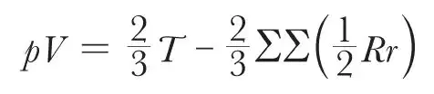
Here p denotes the pressure of a fluid, and V the volume of the vessel which contains it. The product pV, in the case of gases at constant temperature, remains, as Boyle’s Law tells us, nearly constant for different volumes and pressures. This member of the equation, therefore, is the product of two quantities, each of which can be directly measured. 中文
The other member of the equation consists of two terms, the first depending on the motion of the particles, and the second on the forces with which they act on each other. 中文
The quantity T is the kinetic energy of the system, or, in other words, that part of the energy which is due to the motion of the parts of the system. 中文
The kinetic energy of a particle is half the product of its mass into the square of its velocity, and the kinetic energy of the system is the sum of the kinetic energy of its parts. 中文
In the second term, r is the distance between any two particles, and R is the attraction between them. (If the force is a repulsion or a pressure, R is to be reckoned negative.) 中文
The quantity
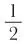
Rr, or half the product of the attraction into the distance across which the attraction is exerted, is defined by Clausius as the virial of the attraction. (In the case of pressure or repulsion, the virial is negative.) 中文
The importance of this quantity was first pointed out by Clausius, who, by giving it a name, has greatly facilitated the application of his method to physical exposition. 中文
The virial of the system is the sum of the virials belonging to every pair of particles which exist in the system. This is expressed by the double sum ∑∑(
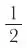
Rr), which indicates that the value of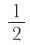
Rr is to be found for every pair of particles, and the results added together. 中文
Clausius has established this equation by a very simple mathematical process, with which I need not trouble you, as we are not studying mathematics tonight. We may see, however, that it indicates two causes which may affect the pressure of the fluid on the vessel which contains it: the motion of its particles, which tends to increase the pressure, and the attraction of its particles, which tends to diminish the pressure. 中文
We may therefore attribute the pressure of a fluid either to the motion of its particles or to a repulsion between them. 中文
Let us test by means of this result of Clausius the theory that the pressure of a gas arises entirely from the repulsion which one particle exerts on another, these particles, in the case of gas in a fixed vessel, being really at rest. 中文
In this case the virial must be negative, and since by Boyle’s Law the product of pressure and volume is constant, the virial also must be constant, whatever the volume, in the same quantity of gas at constant temperature. It follows from this that Rr, the product of the repulsion of two particles into the distance between them, must be constant, or in other words that the repulsion must be inversely as the distance, a law which Newton has shown to be inadmissible in the case of molecular forces, as it would make the action of the distant parts of bodies greater than that of contiguous parts. In fact, we have only to observe that if Rr is constant, the virial of every pair of particles must be the same, so that the virial of the system must be proportional to the number of pairs of particles in the system—that is, to the square of the number of particles, or in other words to the square of the quantity of gas in the vessel. The pressure, according to this law, would not be the same in different vessels of gas at the same density, but would be greater in a large vessel than in a small one, and greater in the open air than in any ordinary vessel. 中文
The pressure of a gas cannot therefore be explained by assuming repulsive forces between the particles. 中文
It must therefore depend, in whole or in part, on the motion of the particles. 中文
If we suppose the particles not to act on each other at all, there will be no virial, and the equation will be reduced to the form
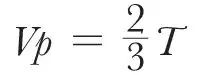
If M is the mass of the whole quantity of gas, and c is the mean square of the velocity of a particle, we may write the equation—
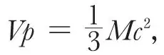
or in words, the product of the volume and the pressure is one-third of the mass multiplied by the mean square of the velocity. If we now assume, what we shall afterwards prove by an independent process, that the mean square of the velocity depends only on the temperature, this equation exactly represents Boyle’s Law. 中文
But we know that most ordinary gases deviate from Boyle’s Law, especially at low temperatures and great densities. Let us see whether the hypothesis of forces between the particles, which we rejected when brought forward as the sole cause of gaseous pressure, may not be consistent with experiment when considered as the cause of this deviation from Boyle’s Law. 中文
When a gas is in an extremely rarefied condition, the number of particles within a given distance of any one particle will be proportional to the density of the gas. Hence the virial arising from the action of one particle on the rest will vary as the density, and the whole virial in unit of volume will vary as the square of the density. 中文
Calling the density  , and dividing the equation by V, we get—
, and dividing the equation by V, we get—
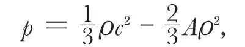
where A is a quantity which is nearly constant for small densities. 中文
Now, the experiments of Regnault show that in most gases, as the density increases the pressure falls below the value calculated by Boyle’s Law. Hence the viral must be positive; that is to say, the mutual action of the particles must be in the main attractive, and the effect of this action in diminishing the pressure must be at first very nearly as the square of the density. 中文
On the other hand, when the pressure is made still greater the substance at length reaches a state in which an enormous increase of pressure produces but a very small increase of density. This indicates that the virial is now negative, or, in other words, the action between the particles is now, in the main, repulsive. We may therefore conclude that the action between two particles at any sensible distance is quite insensible. As the particles approach each other the action first shows itself as an attraction, which reaches a maximum, then diminishes, and at length becomes a repulsion so great that no attainable force can reduce the distance of the particles to zero. 中文
The relation between pressure and density arising from such an action between the particles is of this kind. 中文
As the density increases from zero, the pressure at first depends almost entirely on the motion of the particles, and therefore varies almost exactly as the pressure, according to Boyle’s Law. As the density continues to increase, the effect of the mutual attraction of the particles becomes sensible, and this causes the rise of pressure to be less than that given by Boyle’s Law. If the temperature is low, the effect of attraction may become so large in proportion to the effect of motion that the pressure, instead of always rising as the density increases, may reach a maximum, and then begin to diminish. 中文
At length, however, as the average distance of the particles is still further diminished, the effect of repulsion will prevail over that of attraction, and the pressure will increase so as not only to be greater than that given by Boyle’s Law, but so that an exceedingly small increase of density will produce an enormous increase of pressure. 中文
Hence the relation between pressure and volume may be represented by the curve A B C D E F G, where the horizontal ordinate represents the volume, and the vertical ordinate represents the pressure. 中文
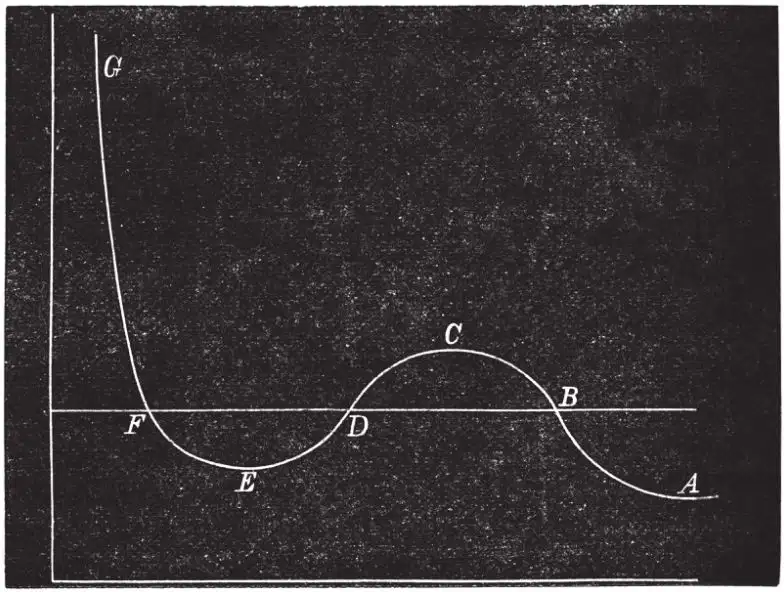
Fig. 1 中文
As the volume diminishes, the pressure increases up to the point C, then diminishes to the point E, and finally increases without limit as the volume diminishes. 中文
We have hitherto supposed the experiment to be conducted in such a way that the density is the same in every part of the medium. This, however, is impossible in practice, as the only condition we can impose on the medium from without is that the whole of the medium shall be contained within a certain vessel. Hence, if it is possible for the medium to arrange itself so that part has one density and part another, we cannot prevent it from doing so. 中文
Now the points B and F represent two states of the medium in which the pressure is the same but the density very different. The whole of the medium may pass from the state B to the state F, not through the intermediate states C D E, but by small successive portions passing directly from the state B to the state F. In this way the successive states of the medium as a whole will be represented by points on the straight line B F, the point B representing it when entirely in the rarefied state, and F representing it when entirely condensed. This is what takes place when a gas or vapour is liquefied. 中文
Under ordinary circumstances, therefore, the relation between pressure and volume at constant temperature is represented by the broken line A B F G. If, however, the medium when liquefied is carefully kept from contact with vapour, it may be preserved in the liquid condition and brought into states represented by the portion of the curve between F and E. It is also possible that methods may be devised whereby the vapour may be prevented from condensing, and brought into states represented by points in B C. 中文
The portion of the hypothetical curve from C to E represents states which are essentially unstable, and which cannot therefore be realised. 中文
Now let us suppose the medium to pass from B to F along the hypothetical curve B C D E F in a state always homogeneous, and to return along the straight line F B in the form of a mixture of liquid and vapour. Since the temperature has been constant throughout, no heat can have been transformed into work. Now the heat transformed into work is represented by the excess of the area F D E over B C D. Hence the condition which determines the maximum pressure of the vapour at given temperature is that the line B F cuts off equal areas from the curve above and below. 中文
The higher the temperature, the greater the part of the pressure which depends on motion, as compared with that which depends on forces between the particles. Hence, as the temperature rises, the dip in the curve becomes less marked, and at a certain temperature the curve, instead of dipping, merely becomes horizontal at a certain point, and then slopes upward as before. This point is called the critical point. It has been determined for carbonic acid by the masterly researches of Andrews. It corresponds to a definite temperature, pressure and density. 中文
At higher temperatures the curve slopes upwards throughout, and there is nothing corresponding to liquefaction in passing from the rarest to the densest state. 中文
The molecular theory of the continuity of the liquid and gaseous states forms the subject of an exceedingly ingenious thesis by Mr. Johannes Diderik van der Waals†, a graduate of Leyden. There are certain points in which I think he has fallen into mathematical errors, and his final result is certainly not a complete expression for the interaction of real molecules, but his attack on this difficult question is so able and so brave, that it cannot fail to give a notable impulse to molecular science. It has certainly directed the attention of more than one inquirer to the study of the Low-Dutch language in which it is written. 中文
The purely thermodynamical relations of the different states of matter do not belong to our subject, as they are independent of particular theories about molecules. I must not, however, omit to mention a most important American contribution to this part of thermodynamics by Prof. Willard Gibbs‡, of Yale College, U. S., who has given us a remarkably simple and thoroughly satisfactory method of representing the relations of the different states of matter by means of a model. By means of this model, problems which had long resisted the efforts of myself and others may be solved at once. 中文
(11, 357-359; 1875)
II
Let us now return to the case of a highly rarefied gas in which the pressure is due entirely to the motion of its particles. It is easy to calculate the mean square of the velocity of the particles from the equation of Clausius, since the volume, the pressure, and the mass are all measurable quantities. Supposing the velocity of every particle the same, the velocity of a molecule of oxygen would be 461 metres per second, of nitrogen 492, and of hydrogen 1,844, at the temperature 0 ℃. 中文
The explanation of the pressure of a gas on the vessel which contains it by the impact of its particles on the surface of the vessel has been suggested at various times by various writers. The fact, however, that gases are not observed to disseminate themselves through the atmosphere with velocities at all approaching those just mentioned, remained unexplained, till Clausius, by a thorough study of the motions of an immense number of particles, developed the methods and ideas of modern molecular science. 中文
To him we are indebted for the conception of the mean length of the path of a molecule of a gas between its successive encounters with other molecules. As soon as it was seen how each molecule, after describing an exceedingly short path, encounters another, and then describes a new path in a quite different direction, it became evident that the rate of diffusion of gases depends not merely on the velocity of the molecules, but on the distance they travel between each encounter. 中文
I shall have more to say about the special contributions of Clausius to molecular science. The main fact, however, is, that he opened up a new field of mathematical physics by showing bow to deal mathematically with moving systems of innumerable molecules. 中文
Clausius, in his earlier investigations at least, did not attempt to determine whether the velocities of all the molecules of the same gas are equal, or whether, if unequal, there is any law according to which they are distributed. He therefore, as a first hypothesis, seems to have assumed that the velocities are equal. But it is easy to see that if encounters take place among a great number of molecules, their velocities, even if originally equal, will become unequal, for, except under conditions which can be only rarely satisfied, two molecules having equal velocities before their encounter will acquire unequal velocities after the encounter. By distributing the molecules into groups according to their velocities, we may substitute for the impossible task of following every individual molecule through all its encounters, that of registering the increase or decrease of the number of molecules in the different groups. 中文
By following this method, which is the only one available either experimentally or mathematically, we pass from the methods of strict dynamics to those of statistics and probability. 中文
When an encounter takes place between two molecules, they are transferred from one pair of groups to another, but by the time that a great many encounters have taken place, the number which enter each group is, on an average, neither more nor less than the number which leave it during the same time. When the system has reached this state, the numbers in each group must be distributed according to some definite law. 中文
As soon as I became acquainted with the investigations of Clausius, I endeavoured to ascertain this law. 中文
The result which I published in 1860 has since been subjected to a more strict investigation by Dr. Ludwig Boltzmann, who has also applied his method to the study of the motion of compound molecules. The mathematical investigation, though, like all parts of the science of probabilities and statistics, it is somewhat difficult, does not appear faulty. On the physical side, however, it leads to consequences, some of which, being manifestly true, seem to indicate that the hypotheses are well chosen, while others seem to be so irreconcilable with known experimental results, that we are compelled to admit that something essential to the complete statement of the physical theory of molecular encounters must have hitherto escaped us. 中文
I must now attempt to give you some account of the present state of these investigations, without, however, entering into their mathematical demonstration. 中文
I must begin by stating the general law of the distribution of velocity among molecules of the same kind. 中文
If we take a fixed point in this diagram and draw from this point a line representing in direction and magnitude the velocity of a molecule, and make a dot at the end of the line, the position of the dot will indicate the state of motion of the molecule. 中文
If we do the same for all the other molecules, the diagram will be dotted all over, the dots being more numerous in certain places than in others. 中文
The law of distribution of the dots may be shown to be the same as that which prevails among errors of observation or of adjustment. 中文
The dots in the diagram before you may be taken to represent the velocities of molecules, the different observations of the position of the same star, or the bullet-holes round the bull’s eye of a target, all of which are distributed in the same manner. 中文
The velocities of the molecules have values ranging from zero to infinity, so that in speaking of the average velocity of the molecules we must define what we mean. 中文
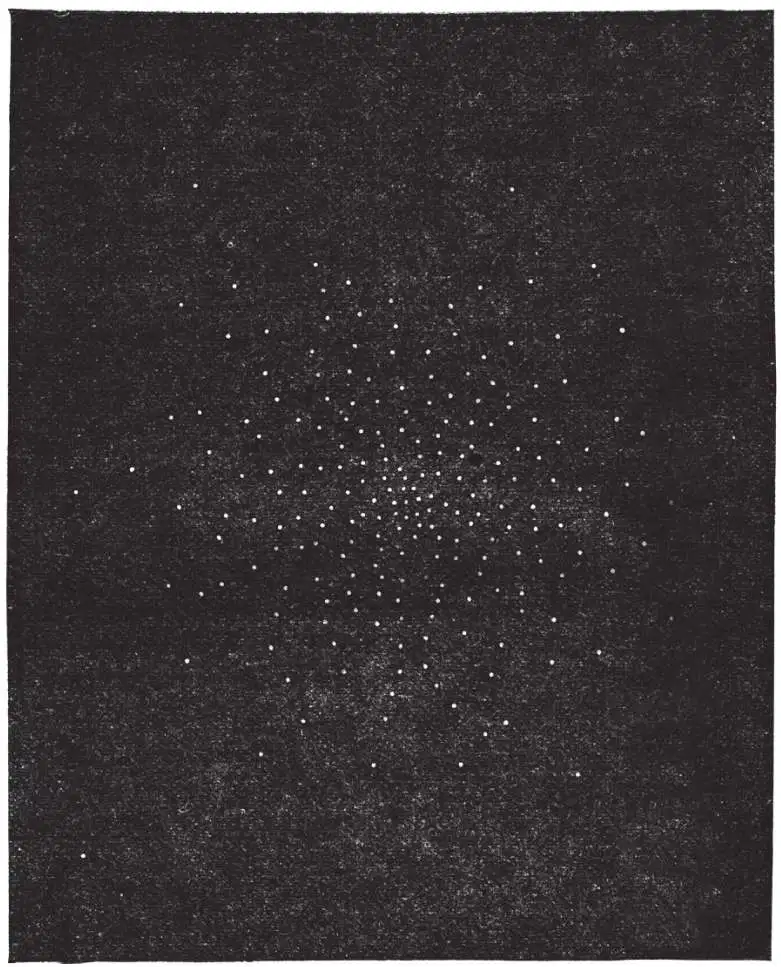
Fig. 2. Diagram of Velocities 中文
The most useful quantity for purposes of comparison and calculation is called the “velocity of mean square”. It is that velocity whose square is the average of the squares of the velocities of all the molecules. 中文
This is the velocity given above as calculated from the properties of different gases. A molecule moving with the velocity of mean square has a kinetic energy equal to the average kinetic energy of all the molecules in the medium, and if a single mass equal to that of the whole quantity of gas were moving with this velocity, it would have the same kinetic energy as the gas actually has, only it would be in a visible form and directly available for doing work. 中文
If in the same vessel there are different kinds of molecules, some of greater mass than others, it appears from this investigation that their velocities will be so distributed that the average kinetic energy of a molecule will be the same, whether its mass be great or small. 中文
Here we have perhaps the most important application which has yet been made of dynamical methods to chemical science. For, suppose that we have two gases in the same vessel. The ultimate distribution of agitation among the molecules is such that the average kinetic energy of an individual molecule is the same in either gas. This ultimate state is also, as we know, a state of equal temperature. Hence the condition that two gases shall have the same temperature is that the average kinetic energy of a single molecule shall be the same in the two gases. 中文
Now, we have already shown that the pressure of a gas is two-thirds of the kinetic energy in unit of volume. Hence, if the pressure as well as the temperature be the same in the two gases, the kinetic energy per unit of volume is the same, as well as the kinetic energy molecule. There must, therefore, be the same number of molecules in unit of volume in the two gases. 中文
This result coincides with the law of equivalent volumes established by Gay Lussac. This law, however, has hitherto tested on purely chemical evidence, the relative masses of the molecules of different substances having been deduced from the proportions in which the substances enter into chemical combination. It is now demonstrated on dynamical principles. The molecule is defined as that small portion of the substance which moves as one lump during the motion of agitation. This is a purely dynamical definition, independent of any experiments on combination. 中文
The density of a gaseous medium, at standard temperature and pressure, is proportional to the mass of one of its molecules as thus defined. 中文
We have thus a safe method of estimating the relative masses of molecules of different substances when in the gaseous state. This method is more to be depended on than those founded on electrolysis or on specific heat, because our knowledge of the conditions of the motion of agitation is more complete than our knowledge of electrolysis, or of the internal motions of the constituents of a molecule. 中文
I must now say something about these internal motions, because the greatest difficulty which the kinetic theory of gases has yet encountered belongs to this part of the subject. 中文
We have hitherto considered only the motion of the centre of mass of the molecule. We have now to consider the motion of the constituents of the molecule relative to the centre of mass. 中文
If we suppose that the constituents of a molecule are atoms, and that each atom is what is called a material point, then each atom may move in three different and independent ways, corresponding to the three dimensions of space, so that the number of variables required to determine the position and configuration of all the atoms of the molecule is three times the number of atoms. 中文
It is not essential, however, to the mathematical investigation to assume that the molecule is made up of atoms. All that is assumed is that the position and configuration of the molecule can be completely expressed by a certain number of variables. 中文
Let us call this number n. 中文
Of these variables, three are required to determine the position of the centre of mass of the molecule, and the remaining n–3 to determine its configuration relative to its centre of mass. 中文
To each of the n variables corresponds a different kind of motion. 中文
The motion of translation of the centre of mass has three components. 中文
The motions of the parts relative to the centre of mass have n–3 components. 中文
The kinetic energy of the molecule may be regarded as made up of two parts—that of the mass of the molecule supposed to be concentrated at its centre of mass, and that of the motions of the parts relative to the centre of mass. The first part is called the energy of translation, the second that of rotation and vibration. The sum of these is the whole energy of motion of the molecule. 中文
The pressure of the gas depends, as we have seen, on the energy of translation alone. The specific heat depends on the rate at which the whole energy, kinetic and potential, increases as the temperature rises. 中文
Clausius had long ago pointed out that the ratio of increment of the whole energy to that of the energy of translation may be determined if we know by experiment the ratio of the specific heat at constant pressure to that at constant volume. 中文
He did not, however, attempt to determine à priori the ratio of the two parts of the energy, though he suggested, as an extremely probable hypothesis, that the average values of the two parts of the energy in a given substance always adjust themselves to the same ratio. He left the numerical value of this ratio to be determined by experiment. 中文
In 1860 I investigated the ratio of the two parts of the energy on the hypothesis that the molecules are elastic bodies of invariable form. I found, to my great surprise, that whatever be the shape of the molecules, provided they are not perfectly smooth and spherical, the ratio of the two parts of the energy must be always the same, the two parts being in fact equal. 中文
This result is confirmed by the researches of Boltzmann, who has worked out the general case of a molecule having n variables. 中文
He finds that while the average energy of translation is the same for molecules of all kinds at the same temperature, the whole energy of motion is to the energy of translation as n to 3. 中文
For a rigid body n=6, which makes the whole energy of motion twice the energy of energy of translation. 中文
But if the molecule is capable of changing its form under the action of impressed forces, it must be capable of storing up potential energy, and if the forces are such as to ensure the stability of the molecule, the average potential energy will increase when the average energy of internal motion increases. 中文
Hence, as the temperature rises, the increments of the energy of translation, the energy of internal motion, and the potential energy are as 3, (n–3), and e respectively, where e is a positive quantity of unknown value depending on the law of the force which binds together the constituents of the molecule. 中文
When the volume of the substance is maintained constant, the effect of the application of heat is to increase the whole energy. We thus find for the specific heat of a gas at constant volume—
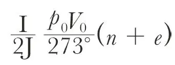
where p0 and V0 are the pressure and volume of unit of mass at zero centigrade, or 273° absolute temperature, and J is the dynamical equivalent of heat. The specific heat at constant pressure is
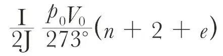
In gases whose molecules have the same degree of complexity the value of n is the same, and that of e may be the same. 中文
If this is the case, the specific heat is inversely as the specific gravity, according to the law of Dulong and Petit, which is, to a certain degree of approximation, verified by experiment. 中文
But if we take the actual values of the specific heat as found by Regnault and compare them with this formula, we find that n + e for air and several other gases cannot be more than 4.9. For carbonic acid and steam it is greater. We obtain the same result if we compare the ratio of the calculated specific heats
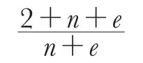
with the ratio as determined by experiment for various gases, namely, 1.408. 中文
And here we are brought face to face with the greatest difficulty which the molecular theory has yet encountered, namely, the interpretation of the equation n + e = 4.9. 中文
If we suppose that the molecules are atoms—mere material points, incapable of rotatory energy or internal motion—then n is 3 and e is zero, and the ratio of the specific heats is 1.66, which is too great for any real gas. 中文
But we learn from the spectroscope that a molecule can execute vibrations of constant period. It cannot therefore be a mere material point, but a system capable of changing its form. Such a system cannot have less than six variables. This would make the greatest value of the ratio of the specific heats 1.33, which is too small for hydrogen, oxygen, nitrogen, carbonic oxide, nitrous oxide, and hydrochloric acid. 中文
But the spectroscope tells us that some molecules can execute a great many different kinds of vibrations. They must therefore be systems of a very considerable degree of complexity, having far more than six variables. Now, every additional variable introduces an additional amount of capacity for internal motion without affecting the external pressure. Every additional variable, therefore, increases the specific heat, whether reckoned at constant pressure or at constant volume. 中文
So does any capacity which the molecule may have for storing up energy in the potential form. But the calculated specific heat is already too great when we suppose the molecule to consist of two atoms only. Hence every additional degree of complexity which we attribute to the molecule can only increase the difficulty of reconciling the observed with the calculated value of the specific heat. 中文
I have now put before you what I consider to be the greatest difficulty yet encountered by the molecular theory. Boltzmann has suggested that we are to look for the explanation in the mutual action between the molecules and the etherial medium which surrounds them. I am afraid, however, that if we call in the help of this medium, we shall only increase the calculated specific heat, which is already too great. 中文
The theorem of Boltzmann may be applied not only to determine the distribution of velocity among the molecules, but to determine the distribution of the molecules themselves in a region in which they are acted on by external forces. It tells us that the density of distribution of the molecules at a point where the potential energy of a molecule is ψ, is proportional to
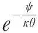
where θ is the absolute temperature, and is a constant for all gases. It follows from this, that if several gases in the same vessel are subject to an external force like that of gravity, the distribution of each gas is the same as if no other gas were present. This result agrees with the law assumed by Dalton, according to which the atmosphere may be regarded as consisting of two independent atmospheres, one of oxygen, and the other of nitrogen; the density of the oxygen diminishing faster than that of the nitrogen, as we ascend. 中文
is a constant for all gases. It follows from this, that if several gases in the same vessel are subject to an external force like that of gravity, the distribution of each gas is the same as if no other gas were present. This result agrees with the law assumed by Dalton, according to which the atmosphere may be regarded as consisting of two independent atmospheres, one of oxygen, and the other of nitrogen; the density of the oxygen diminishing faster than that of the nitrogen, as we ascend. 中文
This would be the case if the atmosphere were never disturbed, but the effect of winds is to mix up the atmosphere and to render its composition more uniform than it would be if left at rest. 中文
Another consequence of Boltzmann’s theorem is, that the temperature tends to become equal throughout a vertical column of gas at rest. 中文
In the case of the atmosphere, the effect of wind is to cause the temperature to vary as that of a mass of air would do if it were carried vertically upwards, expanding and cooling as it ascends. 中文
But besides these results, which I had already obtained by a less elegant method and published in 1866, Boltzmann’s theorem seems to open up a path into a region more purely chemical. For if the gas consists of a number of similar systems, each of which may assume different states having different amounts of energy, the theorem tells us that the number in each state is proportional to
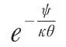
where ψ is the energy, θ the absolute temperature, and a constant. 中文
It is easy to see that this result ought to be applied to the theory of the states of combination which occur in a mixture of different substances. But as it is only during the present week that I have made any attempt to do so, I shall not trouble you with my crude calculations. 中文
I have confined my remarks to a very small part of the field of molecular investigation. I have said nothing about the molecular theory of the diffusion of matter, motion, and energy, for though the results, especially in the diffusion of matter and the transpiration of fluids are of great interest to many chemists, and though from them we deduce important molecular data, they belong to a part of our study the data of which, depending on the conditions of the encounter of two molecules, are necessarily very hypothetical. I have thought it better to exhibit the evidence that the parts of fluids are in motion, and to describe the manner in which that motion is distributed among molecules of different masses. 中文
To show that all the molecules of the same substance are equal in mass, we may refer to the methods of dialysis introduced by Graham, by which two gases of different densities may be separated by percolation through a porous plug. 中文
If in a single gas there were molecules of different masses, the same process of dialysis, repeated a sufficient number of times, would furnish us with two portions of the gas, in one of which the average mass of the molecules would be greater than in the other. The density and the combining weight of these two portions would be different. Now, it may be said that no one has carried out this experiment in a sufficiently elaborate manner for every chemical substance. But the processes of nature are continually carrying out experiments of the same kind; and if there were molecules of the same substance nearly alike, but differing slightly in mass, the greater molecules would be selected in preference to form one compound, and the smaller to form another. But hydrogen is of the same density, whether we obtain it from water or from a hydrocarbon, so that neither oxygen nor carbon can find in hydrogen molecules greater or smaller than the average. 中文
The estimates which have been made of the actual size of molecules are founded on a comparison of the volumes of bodies in the liquid or solid state, with their volumes in the gaseous state. In the study of molecular volumes we meet with many difficulties, but at the same time there are a sufficient number of consistent results to make the study a hopeful one. 中文
The theory of the possible vibrations of a molecule has not yet been studied as it ought, with the help of a continual comparison between the dynamical theory and the evidence of the spectroscope. An intelligent student, armed with the calculus and the spectroscope, can hardly fail to discover some important fact about the internal constitution of a molecule. 中文
The observed transparency of gases may seem hardly consistent with the results of molecular investigations. 中文
A model of the molecules of a gas consisting of marbles scattered at distances bearing the proper proportion to their diameters, would allow very little light to penetrate through a hundred feet. 中文
But if we remember the small size of the molecules compared with the length of a wave of light, we may apply certain theoretical investigations of Lord Rayleigh’s about the mutual action between waves and small spheres, which show that the transparency of the atmosphere, if affected only by the presence of molecules, would be far greater than we have any reason to believe it to be. 中文
A much more difficult investigation, which has hardly yet been attempted, relates to the electric properties of gases. No one has yet explained why dense gases are such good insulators, and why, when rarefied or heated, they permit the discharge of electricity, whereas a perfect vacuum is the best of all insulators. 中文
It is true that the diffusion of molecules goes on faster in a rarefied gas, because the mean path of a molecule is inversely as the density. But the electrical difference between dense and rare gas appears to be too great to be accounted for in this way. 中文
But while I think it right to point out the hitherto unconquered difficulties of this molecular theory, I must not forget to remind you of the numerous facts which it satisfactorily explains. We have already mentioned the gaseous laws, as they are called, which express the relations between volume, pressure, and temperature, and Gay Lussac’s very important law of equivalent volumes. The explanation of these may be regarded as complete. The law of molecular specific heats is less accurately verified by experiment, and its full explanation depends on a more perfect knowledge of the internal structure of a molecule than we as yet possess. 中文
But the most important result of these inquiries is a more distinct conception of thermal phenomena. In the first place, the temperature of the medium is measured by the average kinetic energy of translation of a single molecule of the medium. In two media placed in thermal communication, the temperature as thus measured tends to become equal. 中文
In the next place, we learn how to distinguish that kind of motion which we call heat from other kinds of motion. The peculiarity of the motion called heat is that it is perfectly irregular; that is to say, that the direction and magnitude of the velocity of a molecule at a given time cannot be expressed as depending on the present position of the molecule and the time. 中文
In the visible motion of a body, on the other hand, the velocity of the centre of mass of all the molecules in any visible portion of the body is the observed velocity of that portion, though the molecules may have also an irregular agitation on account of the body being hot. 中文
In the transmission of sound, too, the different portions of the body have a motion which is generally too minute and too rapidly alternating to be directly observed. But in the motion which constitutes the physical phenomenon of sound, the velocity of each portion of the medium at any time can be expressed as depending on the position and the time elapsed; so that the motion of a medium during the passage of a sound-wave is regular, and must be distinguished from that which we call heat. 中文
If, however, the sound-wave, instead of traveling onwards in an orderly manner and leaving the medium behind it at rest, meets with resistances which fritter away its motion into irregular agitations, this irregular molecular motion becomes no longer capable of being propagated swiftly in one direction as sound, but lingers in the medium in the form of heat till it is communicated to colder parts of the medium by the slow process of conduction. 中文
The motion which we call light, though still more minute and rapidly alternating than that of sound, is, like that of sound, perfectly regular, and therefore is not heat. What was formerly called Radiant Heat is a phenomenon physically identical with light. 中文
When the radiation arrives at a certain portion of the medium, it enters it and passes through it, emerging at the other side. As long as the medium is engaged in transmitting the radiation it is in a certain state of motion, but as soon as the radiation has passed through it, the medium returns to its former state, the motion being entirely transferred to a new portion of the medium. 中文
Now, the motion which we call heat can never of itself pass from one body to another unless the first body is, during the whole process, hotter than the second. The motion of radiation, therefore, which passes entirely out of one portion of the medium and enters another, cannot be properly called heat. 中文
We may apply the molecular theory of gases to test those hypotheses about the luminiferous ether which assume it to consist of atoms or molecules. 中文
Those who have ventured to describe the constitution of the luminiferous ether have sometimes assumed it to consist of atoms or molecules. 中文
The application of the molecular theory to such hypotheses leads to rather startling results. 中文
In the first place, a molecular ether would be neither more nor less than a gas. We may, if we please, assume that its molecules are each of them equal to the thousandth or the millionth part of a molecule of hydrogen, and that they can traverse freely the interspaces of all ordinary molecules. But, as we have seen, an equilibrium will establish itself between the agitation of the ordinary molecules and those of the ether. In other words, the ether and the bodies in it will tend to equality of temperature, and the ether will be subject to the ordinary gaseous laws as to pressure and temperature. 中文
Among other properties of a gas, it will have that established by Dulong and Petit, so that the capacity for heat of unit of volume of the ether must be equal to that of unit of volume of any ordinary gas at the same pressure. Its presence, therefore, could not fail to be detected in our experiments on specific heat, and we may therefore assert that the constitution of the ether is not molecular. 中文
(11, 374-377; 1875)
* A lecture delivered at the Chemical Society, Feb. 18, by Prof. Clerk Maxwell, F. R. S.
† Over de continuiteit van den gas en vloeistof toestand. Leiden: A. W. Sijthoff, 1873.
‡ “A method of geometrical representation of the thermodynamic properties of substances by means of surfaces.” Transactions of the Connecticut Academy of Arts and Sciences, vol. II, Part 2.